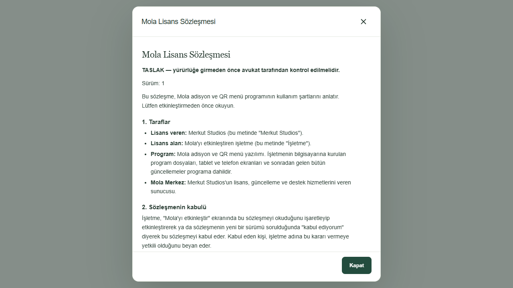
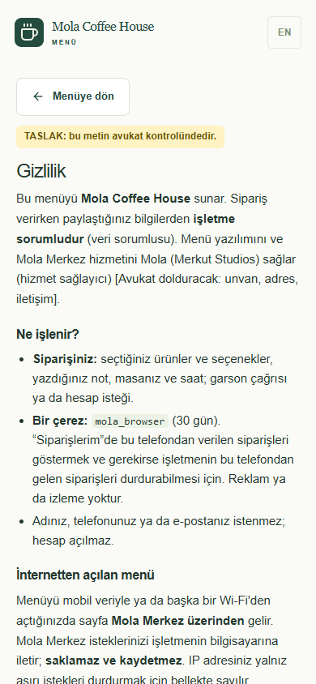

1Bu dosya hakkında
Mola, Elazığ'daki kafe, restoran, pastane ve çay bahçeleri için yazılmış bir adisyon ve QR menü programıdır. Bu dosyanın tek amacı, programı hukuki açıdan değerlendirebilmeniz için gereken bilgiyi vermektir: hangi işlevin hukuki bir sonucu var, o işlevi neden öyle kurduk ve hangi soruların cevabını sizden bekliyoruz. Kullanım adımları ve hukuki önemi olmayan ekran ayrıntıları bilerek dışarıda bırakıldı.
1.1 Okuma notları
- Her saklama süresi, şifreleme ve veri alanı programın kaynak kodunda arandı. Kodda bulunamayan ya da gerçek ortamda denenmemiş bilgiler Doğrulanmadı rozetiyle işaretlidir.
- Sahibin verdiği iş kararları Karar, sizin cevabınızı bekleyen noktalar Avukata soru, henüz avukat onayı almamış metinler Taslak rozetiyle gösterilir.
- Teknik terimlerin kısa açıklaması Ek C'deki sözlüktedir.
1.2 Bugünkü durum
- Satış henüz başlamadı. Program pilot kafelerde denenmeye hazırlanıyor (önce birkaç kafe, 30 günlük deneme).
- Satıcı şimdilik şahıstır. Merkut Studios bir marka adıdır; satışlar başlayınca şirket kurulması planlanıyor (bölüm 16.12).
- Mola Merkez (satıcının sunucusu) 12 Ekim 2026'dan beri çalışıyor: sanal sunucu (VDS), sağlayıcı Keyubu/Datacasa, veri merkezi İstanbul. Merkez verisi Türkiye'de durur; sunucu dışındaki kopyalar bölüm 3.4 ve 12'de.
- Alan adı
molayazilim.com.tr(kayıt firması Metunic); DNS hizmeti Cloudflare, yalnız ad çözümlemesi. Sitedeki KVKK, gizlilik ve çerez sayfaları taslaktır (Ek B). - Mola Lisans Sözleşmesi'nin taslağı (sürüm 4) programda zorunlu onay olarak kullanılıyor (Ek A). Avukat onayı bekliyor.
1.3 Tek sayfada özet
- İşletmenin bütün verisi (satış, ödeme, menü, çalışanlar, misafir ve rezervasyon bilgileri) işletmenin kendi bilgisayarında, şifreli olarak durur. Satış verisi Merkut Studios'a gelmez. Amaç: misafir ve çalışan verisinin sorumlusu işletme olsun, satıcı bu veriyi hiç taşımasın.
- Mola Merkez yalnız lisans, etkinleştirme, destek, güncelleme ve bakım bilgisini tutar. Ayrıca menünün herkese açık bir kopyasını ve (hizmet alınmışsa) işletmenin şifreli yedeğini saklar. Yedeğin anahtarı Merkez'de yoktur; yedek kurtarma koduyla ya da işletme sahibinin şifresiyle açılır (bölüm 7).
- Misafir QR menüyü internetten açtığında menü ve sipariş trafiği Mola Merkez'den geçer. Merkez bu trafiği açık hâlde görür ama saklamaz ve günlüğe yazmaz.
- İşletme sahibinin telefonuna giden raporlar ve uzaktan yönetim uçtan uca şifrelidir; Merkez yalnız şifreli metni taşır. Mola ekibinin kafeye uzaktan bağlanması yalnız sahibin izniyle ve satış ile kişisel veri ekranları kapalı olarak mümkündür.
- Kapanan her yılın kayıtları paketlenirken müşterilerin kişisel bilgileri kendiliğinden silinir; rakamlar kalır (bölüm 5).
- Mola yazar kasa değildir, yasal fiş kesmez, e-Adisyon değildir. Fişleri "BİLGİ FİŞİ" başlığını taşır (bölüm 10).
- Taraflardan hangisinin hangi veri için veri sorumlusu ya da veri işleyen olduğunun değerlendirilmesi (bölüm 2).
- Aydınlatma metinleri: misafirler, rezervasyon müşterileri, çalışanlar, web sitesi ziyaretçileri ve form dolduranlar, işletme sahipleri. Gerekiyorsa açık rıza metinleri.
- Gizlilik politikası ve çerez politikası (site ve program).
- Mola Lisans Sözleşmesi taslağının gözden geçirilmesi (Ek A; programla uyumu bölüm 16'nın başında).
- Abonelik ve hizmet sözleşmesi, veri işleme sözleşmesi (satıcı ile işletme arasında), uzaktan destek onay metni, web formu metni, satıcı tarafındaki yetkililer için gizlilik taahhüdü.
- VERBİS kaydı, "Mola" marka araştırması ve şirket kuruluşunun etkileri hakkında görüş.
- İlk pilot kafeden önce: işletme ve misafir aydınlatma metinleri, lisans sözleşmesinin son hâli, abonelik sözleşmesi.
- Web sitesi yayına girmeden önce: site yasal sayfaları (unvan, adres, vergi no yer tutucuları dolmalı; e-posta alanının zorunlu olması metne işlenmeli, bölüm 16).
- Masa QR kodlarının toplu basımından önce: misafir aydınlatma metninin son hâli (bugün menünün altında "Gizlilik" bağlantısıyla açılan bir taslak sayfa var, bölüm 14.3).
2Taraflar ve roller
Tablo sistemdeki kişi ve kurumları, sistemin hangi parçasını kullandıklarını ve hangi veriye dokunduklarını gösterir. Son sütun bizim teknik gözlemimizdir; hukuki nitelendirme sizindir.
| Taraf | Kim | Sistemdeki yeri ve dokunduğu veri | Teknik gözlem, sizin değerlendirmeniz için |
|---|---|---|---|
| Merkut Studios (satıcı) | Programın sahibi ve satıcısı. Bugün şahıs (Emirhan İspir, Elazığ). Satışlar başlayınca şirket kurulacak. | Mola Merkez'i ve Mola Yönetim panelini işletir. İşletme kayıtlarını, fatura bilgilerini, destek taleplerini, web sitesi taleplerini ve kendi işlem kayıtlarını tutar. | Kendi müşterilerinin (işletme yetkilileri) ve web sitesi taleplerinin verisi için veri sorumlusu gibi görünüyor. Şifreli yedek, internetten menü ve uzaktan destek için işletme adına işleme yapıyor olabilir. |
| Satıcının yetkilileri | Satıcının Mola Yönetim'e eklediği kişiler (en çok 10). Bugün yalnız satıcının kendisi var. | Kendi şifreleriyle Mola Yönetim'deki her şeyi yapabilir: işletme kayıtları, fatura bilgileri, destek, uzaktan destek. Yönetemedikleri: kullanıcılar, e-posta ayarı, Merkez kurtarma kodu (bölüm 8.4). | Satıcının çalışanı ya da yardımcısı. Gizlilik yükümlülüğünün sözleşmeyle bağlanması gerekebilir. |
| İşletme (kafe, restoran, pastane, çay bahçesi) | Mola'yı lisansla kullanan tüzel ya da gerçek kişi tacir. | Programı kendi kasa bilgisayarında çalıştırır. Misafir, rezervasyon müşterisi ve çalışan verisinin tamamı orada durur. | Misafir ve çalışan verisinin veri sorumlusu gibi görünüyor. Mola'nın mimarisi bu varsayımla kuruldu Karar |
| İşletme sahibi / yetkili | İşletmeyi temsil eden gerçek kişi. | Başvuru formunu doldurur (ad soyad, telefon, e-posta, fatura bilgileri). Programda "İşletme sahibi" hesabıdır; şifresinin doğrulama özeti ve doğrulanmış e-postası Merkez'de durur (bölüm 7.3). | Satıcı açısından ilgili kişi (müşteri yetkilisi); işletme açısından program kullanıcısı. |
| Çalışanlar | Müdür, kasiyer, garson, mutfak. | Kendi hesaplarıyla çalışır; adları, vardiyaları, bahşiş payları, kasa sayımları, aldıkları ödemeler ve yaptıkları işlemler kaydedilir. Hepsi işletmenin bilgisayarındadır. | İşletmenin çalışanı. Satıcıya çalışan verisi gitmez. Kasa kayıtları çalışanı izleme niteliği taşıyabilir (bölüm 9.3). |
| Misafirler | Masadaki QR kodla menüyü açan, sipariş veren kişiler. | Hesap açmaz, ad sorulmaz. Tarayıcıya bir kimlik çerezi yazılır; siparişleri ve notları işletmede durur. İnternetten açılan menüde trafik Mola Merkez'den geçer. | İşletmenin müşterisi. Merkez'in trafiği geçirmesi işletme adına bir işleme olabilir (bölüm 3.3). |
| Rezervasyon müşterileri | Masa ayırtan kişiler. | Personel adını, isteğe bağlı telefonunu ve notunu yazar. İşletmede kalır. | İşletmenin müşterisi. |
| Web sitesi ziyaretçileri | molayazilim.com.tr'yi açan, iletişim formunu dolduran kişiler. | Sitede çerez ve analiz aracı yoktur. Form bilgileri Mola Merkez'e kaydedilir. | Satıcının potansiyel müşterisi. |
| Üçüncü taraf hizmetler | VDS sağlayıcısı, alan adı firması, DNS, e-posta sağlayıcısı, sertifika kuruluşu, Google Drive. | Ayrıntı bölüm 12'de. | VDS sağlayıcısı alt işleyen sayılabilir. Yurt dışı sorusu e-posta, DNS ve Google Drive için doğabilir. |
- Satıcı, işletmenin şifreli yedeğini sakladığında (anahtarı olmadığı hâlde) veri işleyen sayılır mı? Merkez'in sahip şifresinin doğrulama özetini de tutması (bölüm 7.3) bu değerlendirmeyi değiştirir mi?
- İnternetten açılan QR menüde Merkez misafir trafiğini açık hâlde görüp hiç saklamadan aktarıyor. Bu, işletme adına işleme midir; veri işleme sözleşmesi gerekir mi?
- Uzaktan destek oturumunda Mola ekibi işletmenin menü, masa ve ayar ekranlarını görür (satış ve kişisel veri ekranları kapalıdır). Bu erişim nasıl nitelendirilmeli?
- Destek taleplerine işletmenin eklediği ekran görüntüleri ve mesajlar kişisel veri içerebilir. Satıcı burada veri sorumlusu mu, veri işleyen mi?
3Verinin yeri
Mola iki parçadan oluşur: her işletmenin kendi bilgisayarında çalışan kafe sunucusu ve satıcının işlettiği Mola Merkez. Bağlantıyı her zaman kafe başlatır; Merkez kafeye kendiliğinden bağlanamaz, yalnız yanıt verir. Bu, satıcının işletme verisine kendi isteğiyle ulaşamaması için seçildi.
3.1 İşletmenin bilgisayarı
- Mola işletmenin kasa bilgisayarına (Windows) kurulur. Tabletler ve telefonlar ona kafenin Wi-Fi'si üzerinden bağlanır.
- Bütün veri tek bir veritabanı dosyasındadır ve her kayıt ayrı ayrı şifrelenir (AES-256-GCM). Ana anahtar diskte düz durmaz: o bilgisayarın Windows kilidi, sahibe kâğıtta verilen 24 karakterlik kurtarma kodu ve işletme sahibinin şifresi ile ayrı ayrı kilitlenir (bölüm 7). Kurtarma kodu hiçbir yerde saklanmaz; satıcı da bilmez. Disk çalınsa veri okunamaz.
- Bilinen sınır: kafe içindeki ağ trafiği (tablet ile kasa bilgisayarı arası) şifresiz HTTP'dir. Bu yüzden kurtarma kodu gibi bilgiler yalnız kasa bilgisayarının kendi ekranında gösterilir. İnternetten geçen her şey HTTPS'tir.
3.2 Mola Merkez'in sakladıkları
Kafe, Merkez'e açılışta ve 10 dakikada bir imzalı bir "kalp atışı" gönderir. Merkez bu gönderinin alanlarını katı bir listeyle denetler ve listede olmayanı reddeder. Sipariş, ödeme, tutar, ürün adı, çalışan adı ya da şifresi ve müşteri adı bu listede yoktur; bunu otomatik bir test de denetler. Amaç, satış ve misafir verisinin yanlışlıkla bile satıcıya gitmemesidir.
| Merkez'deki bilgi | İçerik | Kişisel veri | Saklama |
|---|---|---|---|
| İşletme kaydı ve lisans | İşletme adı ve türü, plan, bitiş tarihi, hizmet paketi, askı/dondurma durumu, imzalı lisanslar, lisans sözleşmesi kabulü (sürüm, zaman, yetkili adı). | Kısmen (ad) | İşletme kaydı silinene kadar. |
| Başvuru ve fatura bilgileri | Ticari unvan, vergi dairesi, VKN ya da TCKN, il, ilçe, açık adres, cep telefonu, e-posta, yetkili adı soyadı, aydınlatma onayı. Tekrar başvuruları bulmak için vergi no, telefon ve e-postanın yalnız anahtarlı özetlerinden oluşan ayrı bir dizin. | Evet | İşletme kaydı silinene kadar. Reddedilen başvuru karardan 1 yıl sonra kendiliğinden silinir Karar. Gönderilmemiş başvuru Merkez'e hiç gelmez. Silinen işletmenin vergi no özeti tekrar başvuruyu fark etmek için kalır. |
| "İşletmem var" bilgileri (bölüm 7.3) | İşletme sahibinin kafedeki kullanıcı adı ve şifresinin doğrulama özeti (scrypt; şifrenin kendisi değil). İşletme sahibinin kodla doğruladığı e-posta adresi ve doğrulama zamanı. | Evet | İşletme kaydıyla. Şifre değişince özet yenisiyle değişir. Satıcı, sahibin isteğiyle doğrulanmış adresi kaldırabilir. |
| Durum özeti (kalp atışı) | Masa, çalışan ve ürün sayıları, son kullanım zamanı, program sürümü, yedek durumu, bilgisayar kimliğinin tek yönlü özeti (kimliğin kendisi gitmez), güncelleme durumu. | Hayır | Son durum tutulur. |
| Hata kayıtları | Hatanın programdaki yeri, istek yolunun kalıbı, durum kodu, rol. IP adresi, şifre, sipariş içeriği, tutar yok. | Hayır | İşletme başına en çok 500 kayıt, 30 gün. |
| Destek talepleri | İşletme sahibinin yazdığı mesajlar (serbest metin), Mola ekibinin yanıtları, dondurma talebinin gerekçesi. | Olabilir | Kapanan görüşme son mesajdan 2 yıl sonra kendiliğinden silinir (kafedeki kopyası da) Karar; açık görüşme işletme kaydı silinene kadar. |
| Destek ekleri | Fotoğraf ve PDF. Fotoğraflar yeniden yazılır; konum ve cihaz bilgisi (EXIF/GPS) dahil hiçbir üst veri kalmaz. | Olabilir | 14 gün sonra kendiliğinden silinir. Merkez yedeğine girmez. |
| Duyuru okundu bilgisi | İşletme başına ilk okuma zamanı ve okuyanın rolü (sahip ya da müdür; kişi adı yok). | Hayır | En yeni 200 duyuru. |
| Menünün kopyası | Misafir menüsünün herkese açık içeriği: işletme adı ve görünümü, ürünler, açıklamalar, fiyatlar, kampanyalar, masa adları, ürün fotoğrafları. Satış, sipariş, misafir, çalışan bilgisi yoktur. Şifreli saklanır. Amaç: kafe bilgisayarı kapalıyken de menü görünsün (sipariş verilemez). | Hayır (kamuya açık içerik) | Kafe güncelledikçe yenilenir; işletme kaydı silinince hemen silinir. |
| Sosyal medya bağlantıları | Misafir menüsünde gösterilen herkese açık bağlantılar ve QR kısa adresi. | Hayır | İşletme kaydıyla. |
| Web sitesi talepleri | İşletme adı, ad soyad, telefon, e-posta (zorunlu; önceki talepler e-postasız olabilir), şehir, masa sayısı (isteğe bağlı), işletme türü, mesaj, KVKK onayının zamanı ve metin sürümü, Mola ekibinin notları. IP adresi kaydedilmez. | Evet | Talep kapatıldıktan 2 yıl sonra kendiliğinden; "Sil" ile hemen. |
| Şifreli sunucu yedekleri (ücretli hizmet) | İşletme yedeğinin şifreli dosyaları. Merkez yalnız zaman, boyut, özet ve sürümü görür (bölüm 7.2). | İçerik okunamaz | Son 3 iş günü + son 2 hafta; kapanmış yılların paketleri işletme silinene kadar; işletme silinince hemen. |
| Program dosyası denetimi | Değiştirilmiş ya da eksik program dosyalarının adları. İçerik ve veri gönderilmez. | Hayır | Son durum. |
| Uzaktan erişim kayıtları | Uzaktan destek izni ve oturumları (başlangıç, bitiş, yapılan değişiklikler); sahibin uzaktan yönetim oturumlarının başlangıç ve bitişi. Eşleşmiş telefonların kimliği ve erişim anahtarının özeti. | Sınırlı | İşlem kayıtlarıyla. |
| İşlem kayıtları (bölüm 9.1) | Mola Yönetim'deki her işlem ve güvenlik olayı: kim, ne, hangi işletme, eski ve yeni değer. Dışarıdan gelen isteklerde IP adresi (web sitesi formunun ziyaretçisininki hiç yazılmaz). Şifre, kod, anahtar, fatura bilgisi değeri ve satış verisi yazılmaz. | Evet (IP, işletme adı, yetkili adı) | Varsayılan 10 yıl (en az 2 yıl, ayarlanır). IP adresleri 1 yıl sonra silinir Karar. Bir istisna bölüm 9.1'de. |
| Satışlarım (satıcının kendi satışları) | Hangi işletmeye hangi paketin satıldığı, tahsilat, yöntem, fatura no, KDV. | İşletme bilgisi | Silinmez; işletme silinse de kalır (satıcının muhasebe kaydı). |
| Mola Yönetim hesapları (bölüm 8.4) | Satıcının ve yetkililerinin adı, kullanıcı adı, şifre özeti (scrypt), iki adımlı giriş sırrı ve yedek kodları; satıcının e-posta ve SMTP ayarı. | Evet (satıcı tarafı) | Hesap durdukça; silinen yetkilinin adı işlem kayıtlarında kalır. |
| Merkez'in kendi yedeği | Yukarıdakilerin şifreli gece yedeği (destek ekleri, menü fotoğrafları ve işletmelerin sunucu yedekleri hariç). | Evet (şifreli) | Sunucuda en yeni 14; kopyaları bölüm 3.4'te. |
3.3 Merkez'den geçen ama saklanmayanlar
İnternetten açılan QR menü
Masadaki QR kodu menüye ayrılmış bir adres taşır (menu.molayazilim.com.tr; Mola Yönetim'in ve sitenin adreslerinden ayrı). Misafir bunu kendi mobil verisiyle açabilir. İstek Mola Merkez'e gelir; Merkez onu, kafenin kendi açtığı tek bir şifreli bağlantının (tünel) içinden kafeye iletir ve cevabı misafire döner. Böylece kafede modem ayarı ya da port açmak gerekmez ve kafe bilgisayarı internete açılmaz.
- Merkez'in gördüğü: menü, sepet, sipariş, sipariş notu, garson çağrısı, hesap isteği. Merkez şifreli bağlantıyı kendisi açtığı için bu trafiği açık hâlde görür.
- Merkez'in sakladığı: hiçbiri. İçerik ve istek yolu veritabanına ya da günlüğe yazılmaz. Yalnız kafe başına istek ve hata sayıları bellekte tutulur (Merkez yeniden başlayınca sıfırlanır). Menünün herkese açık kopyası ayrıca saklanır (bölüm 3.2); misafire ait hiçbir şey içermez.
- Misafirin IP adresi: Merkez'de yalnız aşırı istekleri sınırlamak için bellekte sayılır ve kafeye aynı amaçla imzalı olarak iletilir; saklanmaz. Kafede de yalnız bellekte sayılır.
- Çerez:
mola_browser(30 gün) yalnız menü adresine ve o işletmenin yoluna yazılır: iki işletme aynı çerezi paylaşmaz, Mola Yönetim ve web sitesi bu çerezi görmez. - Askıdaki işletme: lisans bitmiş, askıda, dondurulmuş ya da kafe 14 gündür bağlanmamışsa Merkez kafeye hiç sormadan "Bu işletmenin dijital menüsü şu anda kullanılamıyor." sayfasını gösterir.
Misafir aydınlatma metnine şu cümlenin eklenmesi önerildi: "QR menü internet üzerinden Mola Merkez aracılığıyla sunulur; Mola içeriği saklamaz." Bu cümle yeterli mi ve hangi metinde (işletmenin aydınlatma metni mi, satıcının metni mi) yer almalı?
Şifreli aktarılanlar
- Raporlarım ve sahibin uzaktan yönetimi: kafe bilgisayarı ile sahibin eşleşmiş cihazı arasında uçtan uca şifreli (bölüm 8.3). Merkez anahtarlara sahip değildir.
- Telefon posta kutusu: kafe kapalıyken telefonun görebilmesi için kafe, telefonun anahtarıyla şifreli bir rapor özeti bırakır. Merkez açamaz; telefon alınca ya da en geç 7 günde silinir, yedeğe girmez.
3.4 Merkez verisinin sunucu dışındaki kopyaları
VDS kaybolursa hizmet dönebilsin diye Merkez verisinin kopyaları sunucu dışında da tutulur. Kişisel veri taşıyan okunabilir kopyalar yalnız satıcının kendi bilgisayarında durur; buluta yalnız şifreli Merkez yedekleri gider.
| Kopya | İçerik | Nerede, nasıl korunur |
|---|---|---|
| Çalışma klasörü (okunabilir) | Merkez'in işlem kayıtları (IP adresi olmadan), hata kayıtları (yalnız kodun yeri), işletme adlarını içeren durum özeti, destek talepleri ve süresi dolmamış ekleri (kişisel veri olabilir). | Satıcının bilgisayarı (Türkiye). Her gün kendiliğinden güncellenir; sunucuda silinen burada da silinir. Program, destek taleplerini OneDrive, Google Drive gibi bulutla eşitlenen bir klasöre yazmayı reddeder. |
| Merkez gece yedekleri (şifreli) | Bölüm 3.2'deki Merkez verisi (fatura bilgileri, web talepleri, destek mesajları dahil). | Satıcının bilgisayarı ve kurulum rehberine göre ayrıca Google Drive. Anahtarı Drive'da değildir; Merkez kurtarma koduyla açılır Doğrulanmadı (Drive'ın gerçekten bağlandığı bu dosyada denetlenmedi). |
| Kafelerin sunucu yedekleri (şifreli) | Bölüm 7.2'deki şifreli yedek kopyaları; felaket kopyası. | Yalnız satıcının bilgisayarı; Google Drive'a gitmez. Anahtarı satıcıda yoktur. |
- Satıcının bilgisayarındaki okunabilir destek talebi kopyası için hangi teknik ve idari tedbirler (disk şifrelemesi, erişim, saklama) beklenir? Bilgisayarın disk şifrelemesi bu dosyada doğrulanmadı.
- Şifreli Merkez yedeklerinin Google Drive'da (yurt dışı sunucular) tutulması yurt dışı aktarım sayılır mı (bölüm 12)?
3.5 E-posta ile giden bilgiler
- İşletmenin dönem raporları: kafe bilgisayarından, işletmenin kendi e-posta hesabıyla (varsayılan ayar Gmail) en çok 5 alıcıya gider; Merkez'e uğramaz. İçerik: satış ve para toplamları, en çok satanlar, kasa kapanışı, KDV dökümü, hafta/ay/yıl raporlarında personel saatleri. Müşteri adı, telefonu, rezervasyon ve not yoktur.
- Satıcının e-postaları: Merkez, satıcının kendi SMTP hesabından (varsayılan Gmail) şunları gönderir: satıcıya olay bildirimleri; isteğe bağlı duyuru kopyalarını işletmelerin fatura e-postasına; Mola Yönetim şifre sıfırlama kodunu; "İşletmem var" ve e-posta doğrulama kodlarını (6 hane, 10 dakika) işletme sahibine; işletmenin yeni bir bilgisayarda açıldığını ve e-posta adresinin değiştiğini işletmenin adreslerine. Web sitesi talebi bildiriminde kişisel veri yoktur (yalnız işletme türü ve şehir).
- Üçüncü taraf bir e-posta servisi (API) kullanılmaz; program doğrudan SMTP ile gönderir. Hangi sağlayıcının seçileceği satıcının ve işletmenin kararıdır (bölüm 12).
4Kişisel veri envanteri
Tablo, ilgili kişi grubuna göre düzenlendi. "Kafe" işletmenin bilgisayarıdır; "Merkez" satıcının sunucusudur. Kafedeki her kayıt şifreli veritabanındadır.
| Veri | Nerede | Kim görür | Saklama | Silme yolu |
|---|---|---|---|---|
| A. Misafir (QR menüyü kullanan) | ||||
Tarayıcı kimliği (mola_browser çerezi: rastgele bir sayı) | Misafirin tarayıcısı; kafede siparişlerde | Personel görmez; ekranda "Misafir 3" gibi etiket | Çerez 30 gün. Kafede açık yıl boyunca; yıl paketlenirken tek yönlü etikete çevrilir | Tarayıcıdan çerez silinebilir; kafede yıl paketlemesi |
| Siparişler, ürün notları (serbest metin), garson çağrısı, hesap isteği ve ödeme tercihi (nakit/kart) | Kafe | Personel (rolüne göre) | Açık yıl boyunca; yıl paketlenirken notlar silinir, tutarlar kalır | Yıl paketlemesi; tek tek silme ekranı yok |
| Engellenen tarayıcı (sahibin "Bu misafiri engelle" seçimi) | Kafe | Sahip, müdür | 90 gün sonra kendiliğinden kalkar Karar | Sahip ya da müdür engeli daha önce kaldırabilir |
| IP adresi | Kafe ve Merkez belleği | Kimse | Saklanmaz; yalnız aşırı istek sayacı | Gerekmez |
| Sepet (gönderilmemiş) | Misafirin tarayıcısı | Yalnız misafir | Sekme kapanınca ya da gönderilince | Kendiliğinden |
| B. Rezervasyon ve etkinlik müşterisi | ||||
| Ad (zorunlu), telefon (isteğe bağlı), not, kişi sayısı, gün, saat, masa, kapora | Kafe | Sahip, müdür, kasiyer ad, telefon ve notu görür; garson telefonu ve notu görmez (sunucu göndermez); mutfak hiçbirini görmez | Açık yıl boyunca tam; yıl paketlenirken ad "Müşteri" olur, telefon ve not silinir | Rezervasyon düzenlenebilir ya da iptal edilir; kaydı tek tek silen bir düğme yok Doğrulanmadı |
| Masaya oturan misafirin adı (hesap fişinde de yazar) | Kafe | Personel | Açık yıl; paketlenirken "Müşteri" | Yıl paketlemesi |
| Etkinlik adı (ör. "Ayşe'nin doğum günü") | Kafe | Sahip, müdür, kasiyer | Yıl paketinde de kalır (işletmenin etiketi sayıldı) | Yok Avukata soru |
| C. Masasız (tezgâh) sipariş ve paket servis müşterisi | ||||
| Masasız siparişte çağrı adı (telefon numarası yazılamaz) | Kafe | Personel | Yalnız sipariş açıkken; uzun dönem kayda geçmez | Kendiliğinden |
| Platform siparişinde müşteri adı ve not (entegrasyon henüz kapalı) | Kafe | Mutfak, kasiyer, sahip | Sipariş açıkken; geçmişe taşınırken atılır. Telefon ve adres hiç saklanmaz | Kendiliğinden |
| D. Çalışanlar | ||||
| Ad, kullanıcı adı, rol, hesap durumu | Kafe | Sahip | Süre sınırı yok. Hesap silinmez, "kapatılır"; geçmiş kayıtlar adı tutar | Hesabı kapatma Avukata soru |
| Şifre | Kafe, yalnız özet (scrypt) | Kimse | Hesapla | Sahip yeni şifre verir |
| Oturumlar (cihaz türü ve tarayıcı adı, ör. "Windows · Edge") | Kafe | Sahip | Gece 05:00'te biter | Sahip kapatabilir |
| Vardiya kayıtları (başlangıç, bitiş, geç kalma, düzeltme geçmişi), günün ilk ve son işlem zamanı | Kafe | Sahip; müdür sahibin izniyle | Süre sınırı yok; yıl paketlerinde de kalır (bordro ve SGK için) | Yok Avukata soru |
| Kasa kayıtları: açılış ve kapanış sayımları ve farkları (kimin saydığı), aldığı ödemeler, bahşiş payları, iptal ve iade gerekçeleri, ödeme türü düzeltmeleri, "gün sonunu geri al" (kim, ne zaman, neden) | Kafe | Sayım sonuçlarını yalnız sahip görür; müdür raporları sahibin izniyle | Süre sınırı yok; yıl paketlerinde kalır | Yok (bölüm 9.3) |
| E-posta raporlarındaki personel saatleri | Alıcıların posta kutusu | Rapor alıcıları | Alıcının e-posta hesabına bağlı | Alıcı siler |
| E. İşletme sahibi ve yetkilisi | ||||
| Kafedeki sahip hesabı (kullanıcı adı, şifre özeti), doğrulama uygulaması sırrı, eşleşmiş cihaz adları, uzaktan yönetim oturumları | Kafe | Sahip | Hesapla; uzak oturum geçmişinde son 50 kayıt | Sahip |
| Sahibin kullanıcı adı ve şifresinin doğrulama özeti; doğrulanmış e-posta ("İşletmem var") | Merkez | Satıcı e-postanın maskeli hâlini görür; özet ekranda gösterilmez | İşletme kaydıyla | Kayıt silme; e-posta kaldırılabilir |
| E-posta raporu ayarları: alıcı adresleri, gönderen hesabı ve uygulama şifresi (şifreli, ekrana geri dönmez) | Kafe | Sahip | Ayar durdukça | Sahip |
| Başvuru ve fatura bilgileri, yetkili adı soyadı, telefon, e-posta | Merkez | Satıcı ve yetkilileri | İşletme kaydı silinene kadar | Kayıt silme (askı sonrası); fatura bilgisi düzeltilebilir |
| Lisans sözleşmesi kabulü (sürüm, zaman, ad) | Merkez ve kafe | Satıcı | İşletme kaydıyla | Kayıt silme |
| Destek mesajları, dondurma gerekçesi, ekler | Merkez; satıcının bilgisayarı (bölüm 3.4); kafede son 300 talep | Satıcı, sahip | Kapanan görüşme 2 yıl; ekler 14 gün | Kayıt silme |
| F. Web sitesi | ||||
| İletişim formu: işletme adı, ad soyad, telefon, e-posta, şehir, masa sayısı, tür, mesaj, onay zamanı ve metin sürümü; Mola ekibinin görüşme notları | Merkez | Satıcı ve yetkilileri | Kapandıktan 2 yıl sonra kendiliğinden | Mola Yönetim'de "Sil" |
| Ziyaretçinin IP adresi | Merkez belleği | Kimse | Saklanmaz. Web sunucusu erişim kaydı tutmaz (ayarında kayıt yönergesi yok) | Gerekmez |
| G. Satıcı tarafı | ||||
| Mola Yönetim'e erişen kişinin IP adresi (Merkez'in kendi bilgisayarı dışından) | Merkez işlem kayıtları | Satıcı ve yetkilileri | 1 yıl; sonra yalnız IP silinir, kaydın kendisi 10 yıl kalır | Kendiliğinden |
5Saklama süreleri
Bunlar programın bugünkü davranışıdır; yasal saklama yükümlülükleriyle (VUK, TTK, iş mevzuatı) karşılaştırılması gerekir (bölüm 17).
5.1 Kapanan yıl paketleri
Her takvim yılının kayıtları, bir sonraki yılın 1 Şubat'ından sonra (Ocak ayı Aralık düzeltmeleri için açık kalır) ayrı bir dosyaya taşınır ve bir daha değiştirilemez Karar. Paketlenirken müşterilerin kişisel bilgileri silinir, rakamlar aynen kalır. Neden: mali kayıtların uzun süre tutulması gerekirken müşterinin kişisel bilgisine bir yıldan sonra ihtiyaç kalmıyor.
- Kapanan yıl yeniden açılmaz. O yılın bir hesabına iade yapılabilir ama iade bugünün kaydı olur.
- İlk yıl paketinden önce veri klasörünün okunabilir (kişisel bilgileri de taşıyan) bir kopyası alınır; bu kopya 90 gün sonra, daha yeni doğrulanmış bir yedek varsa kendiliğinden silinir.
- Yıl paketleri için bir silme süresi yoktur; işletmenin bilgisayarında, yedeklerinde ve (bulut yedek varsa) Merkez'de süresiz durur. Çalışan adları ve vardiyaları da bu yüzden süresiz kalır.
5.2 Bütün süreler
| Ne | Nerede | Süre |
|---|---|---|
| Açık yıl verisi (bütün kişisel bilgilerle) | Kafe | Yıl bitip bir sonraki 1 Şubat'tan sonra paketlenene kadar (en uzun yaklaşık 13 ay) |
| Yıl paketleri (kişisel bilgiler silinmiş) | Kafe, yedekler, Merkez (bulut yedek) | Süresiz; Merkez'de işletme silinene kadar |
| Yerel otomatik yedekler (şifreli) | Kafe bilgisayarı | Son 7 iş günü + son 4 hafta + son 12 ay (en çok 23 yedek, yaklaşık bir yıl) |
| İkinci yedek yeri (flash bellek ya da işletmenin seçtiği klasör) | İşletmenin seçtiği yer | En yeni 3 yedek + yıl paketleri (süresiz) |
| Güncelleme öncesi veri kopyası | Kafe | En yeni 2 kopya |
| Geri dönüşte kenara alınan veri | Kafe | Silinmez (elle silinir) |
| İlk yıl paketinden önceki okunabilir kopya | Kafe | 90 gün |
| Bildirimler (sahibin bildirim kutusu) | Kafe | 90 gün, en çok 300 |
| Hata kayıtları | Kafe / Merkez | 7 gün / 30 gün |
Personel oturumu · misafir oturumu · mola_browser çerezi | Kafe, tarayıcı | Sonraki 05:00 · 6 saat · 30 gün |
| Engellenen misafir tarayıcısı | Kafe | 90 gün (sahip daha önce kaldırabilir) |
| Sunucu yedeği kopyaları | Merkez, satıcının bilgisayarı | Son 3 iş günü + son 2 hafta; işletme silinince hemen |
| Destek ekleri · destek görüşmeleri | Merkez (kafedeki ve satıcı bilgisayarındaki kopyası da) | 14 gün · kapandıktan (son mesajdan) 2 yıl sonra; açık görüşme işletme kaydı silinene kadar |
| Telefon posta kutusu | Merkez | Alınınca ya da 7 gün |
| Web sitesi talepleri | Merkez | Kapandıktan 2 yıl sonra |
| Reddedilen başvuru | Merkez | Karardan 1 yıl sonra Karar |
| Merkez işlem kayıtları | Merkez, satıcının bilgisayarı | Varsayılan 10 yıl, ayarlanabilir, en az 2 yıl |
| İşlem kayıtlarındaki IP adresleri | Merkez | 1 yıl |
| Menünün kopyası ve fotoğrafları | Merkez | Kafe güncelledikçe değişir; işletme kaydı silinince hemen |
| Sahip şifresinin doğrulama özeti, doğrulanmış e-posta | Merkez | İşletme kaydıyla |
| Merkez gece yedekleri | Sunucu, satıcının bilgisayarı, Google Drive | En yeni 14 |
| Satışlarım kayıtları | Merkez | Silinmez |
- Çalışan adlarının, vardiyalarının ve kasa sayım kayıtlarının yıl paketlerinde süresiz kalması doğru mu, yoksa bordro ve SGK süresinden sonra silinmeli mi?
- Etkinlik adı (ör. özel bir doğum günü) paketlenirken silinmeli mi?
- Merkez işlem kayıtları 10 yıl, içlerindeki IP adresleri 1 yıl tutuluyor. Bu süreler ölçülü mü?
- Kapanan destek görüşmeleri için 2 yıl, reddedilen başvurular için 1 yıl, engellenen misafir tarayıcıları için 90 gün seçildi. Uygun mu?
6Silme, düzeltme ve sözleşmenin bitmesi
- Misafir ve rezervasyon müşterisi: veri yalnız işletmenin bilgisayarında olduğu için başvuruyu işletme karşılar. Program kişisel bilgileri yıl paketlemesinde kendiliğinden siler. Tek bir kişinin kayıtlarını o yıl içinde tek tıkla silen bir ekran yoktur; rezervasyon düzenlenebilir (telefon ve not silinebilir) Doğrulanmadı (boş bırakılan alanın kalıcı silindiği ayrıca denenmedi).
- Çalışan: hesap kapatılır; geçmiş kayıtlar (vardiya, satış, kasa) adıyla kalır.
- Web sitesi talebi: Mola Yönetim'de "Sil"; işlem kayıtlarına kişisel veri olmadan yazılır.
- İşletme kaydı (Merkez): yalnız askıdaki işletme silinebilir. Kodlar, destek talepleri, bildirimler, hata kayıtları, sunucu yedekleri, menünün kopyası ve "İşletmem var" bilgileri gider. Kalanlar: küçük bir silinme kaydı (kurulum ve işletme kimliği, silinme zamanı; kafeye kapanışı bildirmek için), vergi no'nun anahtarlı özeti, Satışlarım kayıtları ve işlem kayıtları (işletme adıyla). Kafedeki program kilitlenir ama kafedeki hiçbir veri silinmez.
- Abonelik bitince ya da program kaldırılınca: veri işletmenin bilgisayarında kalır. Kaldırma programı veriyi varsayılan olarak korur; "Verileri ve yedekleri de sil" ancak ikinci bir onayla siler. İkinci yedek yerine hiçbir durumda dokunmaz.
- Veriyi işletmeye verme: veri zaten işletmededir. Raporlar Excel ve PDF olarak alınabilir; ham veritabanı şifrelidir ve yalnız Mola ile (kurtarma kodu ya da sahip şifresiyle) açılır. Avukata soru Sözleşme sona erince işletmeye okunabilir bir dışa aktarım vermek gerekir mi?
7Yedekler, bulut yedek ve yeni bilgisayara taşıma
Verinin tek yeri işletmenin bilgisayarı olduğu için yedek, işletmenin verisini kaybetmemesinin tek güvencesidir. Bu bölüm kimin hangi yedeği açabildiğini anlatır; "Mola yedeği açamaz" ifadesinin bugünkü sınırları 7.3'tedir.
7.1 Yerel yedekler ve kurtarma kodu
- Program her iş günü kendiliğinden şifreli yedek alır ve her yedeği ayrı bir yere geri yükleyerek doğrular. İsteğe bağlı ikinci yer (flash bellek ya da işletmenin seçtiği bir klasör) önerilir. İşletme ikinci yer olarak OneDrive gibi bulutla eşitlenen bir klasör seçerse şifreli yedek o hizmete gider; bu işletmenin seçimidir.
- Yedeği açan anahtarlar: o bilgisayarın Windows kilidi, sahibe kâğıtta verilen kurtarma kodu ve işletme sahibinin şifresi (7.3). Kurtarma kodu satıcıda saklanmaz; kod ve sahip şifresi birlikte kaybolursa veri kurtarılamaz. Lisans sözleşmesi madde 11.3 yedeklemeyi ve kurtarma kodunu işletmenin sorumluluğuna bırakır.
7.2 Bulutta şifreli yedek (ücretli hizmet)
- Hizmet alınmışsa kafenin doğrulanmış yedeğinin şifreli kopyası Merkez'e gönderilir. Merkez yalnız zaman, boyut, özet ve sürümü görür. Mola Yönetim'de yalnız bu özet bilgiler listelenir; panelden yedek indirilemez.
- Felaket kopyası olarak aynı şifreli dosyalar satıcının bilgisayarına da çekilir; Google Drive'a gitmez (bölüm 3.4).
- Yeni bilgisayara geri yükleme iki yolla açılır: Mola ekibinin verdiği tek kullanımlık taşıma kodu ya da işletme sahibinin "İşletmem var" girişi (7.3). Her iki yolda da yedeğin kendisi yeni bilgisayarda, kurtarma kodu ya da sahip şifresiyle açılır.
7.3 "İşletmem var": sahip şifresiyle taşıma
Amaç: kasa bilgisayarı bozulan işletme sahibinin, kurtarma kodunu bulamasa da kendi kullanıcı adı ve şifresiyle verisine dönebilmesi.
- Şifre kilidi kendiliğinden kurulur. İşletme sahibi kafede şifresiyle her girişte, program veri anahtarını sahibin şifresinden türetilen bir anahtarla bir kez daha kilitler; bu kilit sonraki yedeklere de girer. Sahibin ayrıca seçmesi gerekmez.
- Merkez'e giden: kafe, kalp atışıyla sahibin kullanıcı adını ve şifresinin bir doğrulama özetini (scrypt, ayrı tuzla) gönderir. Bu özet yedeği açmaz; yalnız girilen şifrenin doğru olup olmadığını anlamaya yarar.
- Kimlik doğrulama: yeni bilgisayarda sahip işletmenin e-posta adresini, kullanıcı adını ve şifresini yazar. Bu bilgiler HTTPS ile Merkez'e gider; Merkez şifreyi özetle karşılaştırır, saklamaz. Doğruysa işletmenin e-postasına 6 haneli kod gider (10 dakika, 5 deneme). Yanlış bilgide hangi parçanın yanlış olduğu söylenmez; denemeler adres ve işletme başına yavaşlatılır.
- E-posta: başvurudaki fatura e-postası ya da sahibin kafede kodla doğruladığı adres. Adresi değiştirmek için sahibin şifresi ve hem eski hem yeni adrese gelen kod gerekir; eski adrese bildirim gider. Adresini kaybeden sahip için satıcı, arayanı kontrol ettikten sonra doğrulanmış adresi kaldırabilir.
- Bildirimler: başarılı girişte satıcıya uyarı ve işletmenin bütün adreslerine "işletmeniz yeni bir bilgisayarda açıldı" e-postası gider. Yeni bilgisayar bağlanınca eskisinde yeni sipariş kapanır.
- Merkez'de yedeğin anahtarı, kurtarma kodu ya da sahibin şifresi durmaz. Ancak Merkez'de hem şifreli yedek hem de sahip şifresinin doğrulama özeti bulunur. Şifre zayıfsa, bu ikisine erişen biri şifreyi deneme yanılmayla bulup yedeği açabilir. Bu yüzden ifade bugün "sahibin şifresini bilmeden açamaz" anlamında doğrudur.
- "İşletmem var" girişinde şifre Merkez'e açık hâlde (HTTPS içinde) ulaşır ve bellekte doğrulanır. Giriş ekranı da bunu böyle anlatır: şifre doğrulama için şifreli bağlantıyla Merkez'e gider ve orada saklanmaz.
- Lisans sözleşmesi (madde 5, 9.2, 9.3, 11.3; sürüm 4) ve site gizlilik sayfası bu sınırı anlatır: yedekler sahibin şifresiyle de açılabilir, Merkez yalnız tek yönlü özet tutar, şifrenin güçlü seçilmesi işletmenin sorumluluğundadır.
- Sahip şifresinin doğrulama özetinin Merkez'de tutulması ve şifre kilidinin sahibe sorulmadan kendiliğinden kurulması için ayrı bir bilgilendirme ya da onay gerekir mi?
- Lisans 9.2, 9.3 ve 11.3 ile gizlilik sayfasına eklenen ifadeler yeterli mi?
- Bir e-posta kodu ve şifreyle başka bir bilgisayara veri taşınabilmesi, işletme sahibinin hesabını ele geçiren birinin işletme verisine ulaşması riskini doğurur. Sözleşmede bu riskin ve sahibin şifre ile e-posta güvenliği yükümlülüğünün yazılması gerekir mi?
8Erişim: kim neyi görebilir
8.1 İşletme içinde roller
- Beş rol vardır: işletme sahibi, müdür, kasiyer, garson, mutfak. Her işlem sunucuda ayrıca denetlenir; ekranda gizlemekle yetinilmez.
- Kişisel veri sınırları: garson rezervasyon telefonunu ve notunu görmez, mutfak rezervasyon bilgilerini görmez; çalışan hesaplarını, oturumlarını ve kasa sayım sonuçlarını yalnız sahip görür. Müdürün raporları görmesi sahibin iznine bağlıdır.
- Sahip hesabı belirli bir süre işlemsizlikte kilitlenir; kilidi sahibin şifresi açar.
8.2 Uzaktan destek (işletme sahibinin izniyle)
- Varsayılan kapalıdır. Yalnız işletme sahibi, şifresini yeniden yazarak "Mola ekibi bağlanabilsin" iznini açar. Süre sınırı yoktur; sahip her an kapatabilir, kapatınca açık oturum o anda biter.
- Mola ekibi işletmenin ekranlarını kendi tarayıcısında açar; istekler Merkez üzerinden kafeye gider. Bu kanal uçtan uca şifreli değildir: Mola ekibi açtığı ekranları görür (taşıma HTTPS'tir).
- "Mola destek" rolünün yapabildikleri sunucuda tek bir izin listesiyle sınırlıdır: menü, kampanyalar, masa ve QR, yazıcı ve ses, para dışı ayarlar, tanılama. Satış ve raporlar, ödeme ve hesaplar, kasa, giderler, stok maliyeti ve kârlılık, çalışan şifreleri ve oturumları, yedek ve kurtarma, entegrasyon anahtarları, rezervasyon ve misafir telefonları kapalıdır. Bunu otomatik testler denetler.
- Oturum açıkken bütün personel ekranlarında "Mola ekibi bağlı" bandı görünür. Her değişiklik işletmenin kaydına düz Türkçe yazılır (ör. "Mola destek: Ürün değişti: Latte · fiyat ... → ..."); oturum başında ve sonunda sahibe bildirim gider. 30 dakika işlem yoksa ya da 8 saatte oturum biter.
- Bağlanan kişi, satıcının kendisi ya da Mola Yönetim yetkililerinden biri olabilir (8.4); Merkez işlem kayıtlarında adıyla görünür.
8.3 Sahibin uzaktan yönetimi ve Raporlarım
- Telefon eşleştirme: yalnız kafedeki bilgisayardan, sahibin şifresiyle; en çok 3 cihaz. Telefon kendi şifreleme anahtarını üretir; özel anahtar telefondan çıkmaz.
- Raporlarım: sahip telefonundan kasa günü toplamlarını, en çok satanları, açık hesapları ve son kasa kapanışını görür. İçerik kafede üretilir ve yalnız o telefon için şifrelenir.
- Kafeyi yönet: varsayılan kapalı; yalnız kafedeki bilgisayardan, şifre ve doğrulama koduyla (TOTP) açılır. Her uzak girişte yine şifre ve kod istenir; sahibe bildirim gider. Uzaktan yapılamayanlar: yedekten geri yükleme, kurtarma kodu, cihaz eşleştirme, uzaktan erişim izinlerini açmak, güncelleme kurmak. Kafede oturum kaydı tutulur: cihaz adı, başlangıç, bitiş, neden (IP tutulmaz).
8.4 Mola Yönetim kullanıcıları (satıcı tarafı)
- Mola Yönetim'in sahibi ("admin" hesabı) en çok 10 yetkili ekleyebilir. Her yetkilinin kendi kullanıcı adı ve şifresi vardır; sahibin verdiği ilk şifre ilk girişte değiştirilmek zorundadır. Yetkili ekleme, yeni ilk şifre verme ve silme yalnız sahip tarafından ve her adımda sahibin şifresi yeniden sorularak yapılır; silinen yetkilinin açık oturumları hemen kapanır.
- Yetkili, sahibin yapabildiği her şeyi yapar (işletme kayıtları, fatura bilgileri, destek, uzaktan destek, web talepleri), şunlar hariç: kullanıcılar sayfası, e-posta ayarı (sahibin şifre sıfırlama kodunun gittiği adres; yetkili değiştirse sahibin hesabını ele geçirebilirdi), Merkez kurtarma kodu ve geliştirici erişim anahtarları.
- İki adımlı giriş: her hesabın kendi doğrulayıcı uygulaması olur. Girişte zorunlu tutulmaz; açılmışsa her girişte istenir. Fiyat, paket, ödeme, duyuru ve güncelleme işlemleri ise yalnız iki adımlı kodla açılan 10 dakikalık bir onayla yapılabilir.
- Her işlem Merkez işlem kayıtlarına yapanın adıyla yazılır ("Ayşe Yılmaz (yetkili)").
Yetkililer işletmelerin fatura bilgilerine, destek mesajlarına ve uzaktan destek yoluyla işletme ekranlarına erişebilir. Yetkililerle hangi sözleşme ya da gizlilik taahhüdü imzalanmalı; satıcının veri güvenliği yükümlülüğü açısından iki adımlı girişin zorunlu tutulması gerekir mi?
9İşlem kayıtları ve denetim izi
9.1 Merkez işlem kayıtları (değiştirilemez)
- Mola Yönetim'deki her işlem ve güvenlik olayı (giriş, başarısız giriş, lisans, fiyat, ödeme kaydı, silme, uzaktan destek, yetkili ekleme) kim, ne, hangi işletme, eski ve yeni değer bilgisiyle yazılır.
- Kayıtlar yalnız eklenebilir: veritabanı değiştirmeyi ve silmeyi reddeder; her kayıt bir öncekinin özetini taşır (hash zinciri) ve zincirin başı saatte bir dijital olarak imzalanır. Mola'dan bağımsız bir doğrulama komutu vardır. Amaç: bir uyuşmazlıkta satıcının bile kaydı sonradan değiştiremediğini gösterebilmek.
- IP adresi kaydın içinde değil, ayrı bir tabloda durur; 1 yıl sonra adres silinir, zincir bozulmaz.
- "İşletmem var" kod kaydı: kodun gönderildiği maskeli e-posta adresiyle (ör. "y***@gmail.com") yazılır; isteğin IP adresi kaydın metnine yazılmaz, diğer kayıtlar gibi ayrı tutulur ve 1 yıl sonra silinir.
9.2 Kafedeki işlem geçmişi
Kafede de işletmenin işlemleri (iptal, iade, ödeme türü düzeltmesi, fiyat değişikliği, uzaktan destek değişiklikleri, gün sonunu geri alma gibi) yapanın adıyla şifreli bir tabloya yazılır. Bu kayıtta Merkez'deki gibi bir hash zinciri yoktur.
9.3 Kasa güvenliği ve kasa kayıtları
Kasa kayıtları işletmenin kasadaki para farklarını izlemesi için tutulur; çalışanın davranışını kaydettikleri için çalışan verisidir.
- Her zaman: her ödemede ödemeyi alan çalışan kaydedilir. Kasiyer ve müdür gün sonu sayımını kör yapar (beklenen tutarı görmez); sayım sonucunu ve farkı yalnız işletme sahibi görür. Kapanış kaydı sonradan değiştirilmez; düzeltme ayrı bir kayıt olarak eklenir. Gün sonu aynı gün geri alınabilir; geri alınan kapanış raporlardan çıkar ama kim, ne zaman ve hangi gerekçeyle geri aldığı kayıtta kalır.
- Kasa güvenliği (isteğe bağlı altı önlem): hepsi varsayılan kapalıdır, işletme sahibi tek tek açar Karar.
- Açılışta kör sayım: sabah kasayı açan devreden tutarı görmeden sayar; fark sahibe bildirilir.
- Kasadan çıkarılan parayı teslim al: gün sonunda çıkarılan para, sahip saydığı tutarı yazana kadar bekler; fark kaydedilir.
- Vardiya devrini alan da sayar: devirden sonra gelen kişi kör sayar.
- Sayımı sıkılaştır: gün sonunu yalnız sahip geri alır; sayan kişi yazar kasa bölümünde nakit/kart ayrımını görmez.
- POS toplamı zorunlu: kartlı ödeme alınan vardiya, banka POS toplamı yazılmadan sayılamaz.
- Ödeme türü değişince bildir: bir ödemenin nakit/kart türü sonradan değişirse sahibe, ödemeyi kimin aldığıyla birlikte bildirilir.
Kasa farklarının kişiye bağlı olarak kaydedilmesi ve sahibe bildirilmesi çalışan izleme sayılır mı? Çalışan aydınlatma metninde nasıl anlatılmalı; bu kayıtların bir çalışan aleyhine (ör. kasa açığı nedeniyle) delil olarak kullanılması için programın ayrıca bir şey yapması gerekir mi?
10Mali konular: Mola'nın yaptığı ve yapmadığı
Mola mali bir belge düzenlemez. Bu bölüm, programın mali bir iddiada bulunmaması için nasıl kurulduğunu anlatır.
- Fişler: hesap fişi ve ödeme fişi "BİLGİ FİŞİ" başlığını taşır; yasal fiş değildir. Yazıcı ayarlarında ve yazar kasa yardımcısında "Mola'nın hesap fişi resmi fiş değildir. Her satış için yazar kasadan fiş kesilmesi zorunludur." uyarısı vardır. Hesap fişinde KDV bilgisi "KDV dahildir · %10: ..." biçiminde yazar.
- Yazar kasa (ÖKC): Mola yazar kasaya bağlanmaz. İsteğe bağlı yazar kasa yardımcısı (varsayılan kapalı, sahip açar): her ödemeden sonra kasiyere yazar kasaya ne girileceğini KDV departmanına göre gösterir ("%10 departman → tutar · Ödeme: Nakit"); iadede neyin geri alınacağını söyler. Kasiyer "Girildi" işaretleyebilir; işaretlenmeyenler gün sonunda listelenir.
- Z raporu: gün sonunda kasiyer yazar kasanın Z raporu toplamını yazabilir; Mola bunu kendi kayıtlarıyla karşılaştırıp farkı gösterir. Bu bir mutabakat yardımıdır; Mola Z raporu üretmez.
- KDV: her satır satıldığı andaki KDV oranını taşır. Raporlardaki KDV dökümü bilgi amaçlıdır ("resmi beyan yazar kasa ve mali müşaviriniz üzerinden yapılır").
- e-Adisyon: Mola'nın adisyonu e-Adisyon değildir; GİB'e bildirim yapmaz.
- Platform siparişleri: çevrimiçi ödenmiş platform siparişinde program tahmin yapmaz; "fiş/fatura kuralını mali müşavirinize sorun" der.
- Sözleşme: lisans sözleşmesi madde 11.4, vergi, yazar kasa ve e-fatura gibi mali yükümlülükleri işletmeye bırakır.
Mali müşavire sorular bölüm 17.2'dedir.
11Güvenlik önlemleri
KVKK'nın teknik tedbir yükümlülüğü açısından programda bulunan önlemler. Yöntemler yaygın standartlardır.
| Önlem | Ne yapar |
|---|---|
| Kayıt şifrelemesi | Kafedeki her kayıt AES-256-GCM ile şifrelenir; her işletmenin kendi rastgele anahtarı vardır. Merkez'deki menü kopyası, web talepleri ve satış kayıtları da şifreli saklanır. |
| Anahtar koruması | Ana anahtar o bilgisayarın Windows kilidi, 24 karakterlik kurtarma kodu ve sahip şifresiyle kilitli. Disk çalınırsa veri okunamaz. |
| Şifreli yedekler | Her yedek şifrelidir ve geri yüklenerek doğrulanır. |
| İmzalı lisans ve bildirimler | Lisans, güncelleme ve Merkez bildirimleri dijital olarak imzalanır (Ed25519); değiştirilmiş lisans çalışmaz. |
| İmzalı bağlantı | Kafe ile Merkez arasındaki her istek kurulumun gizli anahtarıyla imzalı; tekrar oynatma önlenir. Kafe yalnız HTTPS ile bağlanır. |
| Uçtan uca şifreleme | Raporlarım ve uzaktan yönetim; her oturumun kendi anahtarı. |
| İki adımlı doğrulama | Mola Yönetim girişi (açılmışsa) ve fiyat, paket, ödeme, duyuru ve güncelleme işlemleri; işletme sahibinin uzaktan yönetimi; "İşletmem var" için e-posta kodu. |
| Şifre saklama | Bütün şifreler yalnız özet olarak (scrypt) saklanır; düz şifre hiçbir yerde yok. Yanlış şifre denemeleri sınırlı ve yavaşlatılır. |
| Oturumlar | Çerezler HttpOnly ve SameSite=Strict; diskte oturum anahtarının kendisi değil özeti durur. |
| Rol ve yetki | Her işlem sunucuda rolüne göre denetlenir (bölüm 8). |
| Program dosyası denetimi | Program dosyaları satıcının imzaladığı listeyle karşılaştırılır; fark yalnız bildirilir (lisans madde 6). |
| Değiştirilemez işlem kayıtları | Merkez'de hash zinciri ve imza (bölüm 9.1). |
| Güncellemeler | Güncelleme imzası doğrulanmadan kurulmaz; her kurulumdan önce doğrulanmış yedek alınır, yeni sürüm sağlıklı açılmazsa program ve veri kendiliğinden eski hâline döner. |
| Web güvenliği | QR menü, sipariş, giriş ve başvuru gibi işlemlerde istek sınırları; tahmin edilemeyen masa kodları; başka alan adından gelen isteklerin reddi; sıkı içerik güvenliği politikası. |
Bilinen sınırlar: kafe içi yerel ağ trafiği şifresiz HTTP'dir (bölüm 3.1). Uzaktan destek kanalı uçtan uca şifreli değildir (bölüm 8.2). Program dosyaları kod imzalama sertifikasıyla imzalı değildir. Bilgisayara yönetici olarak erişen biri programı değiştirebilir; dosya denetimi bunu yalnız bildirir. Merkez'de sahip şifresinin doğrulama özeti durur (bölüm 7.3).
12Yurt dışı aktarım ve üçüncü taraflar
Hedef, kişisel verinin Türkiye dışına çıkmamasıdır. Aşağıda bu hedefin bugün nerede tam karşılanmadığı da yazıldı.
| Hizmet | Ne için, hangi veri | Yer ve durum |
|---|---|---|
| VDS (sanal sunucu) | Mola Merkez ve web sitesi; bölüm 3.2'deki bütün Merkez verisi ve internetten menü trafiği. | Keyubu/Datacasa, veri merkezi İstanbul. |
| Satıcının bilgisayarı | Çalışma klasörü (destek talepleri dahil, okunabilir), şifreli Merkez ve kafe yedekleri (bölüm 3.4). | Türkiye. |
| Google Drive | Yalnız şifreli Merkez gece yedekleri; anahtarı Drive'da değil. | ABD merkezli kuruluş; sunucuların yeri bilinmiyor. Kurulum rehberine göre Avukata soru |
| Alan adı (Metunic) | molayazilim.com.tr kaydı. Kişisel veri işlemez. | Türkiye. |
| DNS (Cloudflare) | Yalnız alan adını sunucunun IP adresine çözer. Misafir, site ve Merkez trafiği Cloudflare'den geçmez; doğrudan İstanbul'daki sunucuya gider. | ABD merkezli kuruluş. Avukata soru |
| TLS sertifikası (Let's Encrypt) | HTTPS sertifikası. Yalnız alan adı bilgisi. | ABD merkezli kuruluş. |
| E-posta (satıcı) | Olay bildirimleri, duyuru kopyaları, Mola Yönetim şifre sıfırlama kodu, "İşletmem var" ve e-posta doğrulama kodları, "yeni bilgisayar" ve "adres değişti" bildirimleri (alıcı: işletme sahibinin e-posta adresi). | Programın varsayılan ayarı Gmail. Gmail seçilirse veri yurt dışındaki sunuculardan geçebilir Karar bekliyor |
| E-posta (işletme) | Dönem raporları (satış rakamları, personel saatleri) işletmenin kendi hesabından. | İşletmenin seçimi; varsayılan Gmail. İşletmenin aydınlatma metnini ilgilendirir. |
| Paket servis platformları | Gelecekte sipariş alma. Bugün bağlı değil. | Platformların onayı bekleniyor. |
| Google, Instagram, WhatsApp vb. bağlantılar | Misafir menüsündeki sosyal medya ve değerlendirme bağlantıları misafirin kendi tarayıcısında açılır; Mola bu sitelere veri göndermez. | Misafirin tercihi. |
| Yazılım bileşenleri | Program çalışırken dışarıya istek yapan analiz, reklam, hata izleme ya da yazı tipi servisi yoktur. | Kişisel veri yok. |
- Cloudflare yalnız alan adı çözümlemesi yapıyor. Ziyaretçinin cihazının Cloudflare'e adres sorması yurt dışı aktarım sayılır mı; aydınlatma metinlerinde anılmalı mı?
- Şifreli Merkez yedeklerinin Google Drive'da tutulması yurt dışı aktarım sayılır mı? Site KVKK metni, gizlilik sayfası ve lisans bu kopyaları ve sunucuların yurt dışında olabileceğini yazıyor; bu aktarımın hukuki dayanağı ne olmalı?
- Satıcının e-postası için Gmail kullanılması (işletme sahiplerinin adresleri ve kodlar bu yoldan gider) yurt dışı aktarım sayılır mı; Türkiye'de bir e-posta sağlayıcısı mı seçilmeli?
13Çerezler ve cihazda saklanan bilgiler
13.1 Web sitesi
molayazilim.com.tr çerez, yerel depolama, analiz aracı, reklam aracı, gömülü video ya da dış yazı tipi kullanmaz. İletişim formu, otomatik gönderimlere karşı yalnız sayfa açıkken geçerli, saklanmayan kısa ömürlü bir form anahtarı kullanır.
13.2 Mola programı
| Ad | Tür | Amaç | Süre |
|---|---|---|---|
mola_browser | Çerez | Misafirin tarayıcı kimliği: kendi siparişlerini görmesi, kötüye kullanımda engellenebilmesi, istek sınırları. İnternetten menüde yalnız o işletmenin adresine bağlı. | 30 gün |
mola_staff, mola_staff_p2 | Çerez | Personel oturumu. | Sonraki 05:00 |
mola_merkez | Çerez | Mola Yönetim oturumu (satıcı ve yetkilileri). | 4 saat |
mola_merkez_cihaz | Çerez | Mola Yönetim'de "bilinen cihaz" işareti: deneme sınırlamasından muaf tutar. | 90 gün |
mola_destek | Çerez | Uzaktan destek oturumu (Mola ekibinin tarayıcısı). | 8 saat (30 dakika işlemsizlikte biter) |
| Sepetler ve menü kopyası bağlamı | Sekme deposu | Gönderilmemiş sipariş; kafe kapalıyken açılan menüden sepeti taşımak. | Sekme kapanınca |
| Ekran tercihleri | Yerel depolama | Cihaza özel görünüm tercihleri. Kişisel veri değildir. | Silinene kadar |
| Raporlarım anahtarları | Tarayıcı veritabanı (sahibin cihazı) | Telefonun dışa aktarılamaz şifreleme anahtarı. | Cihaz kaldırılana kadar |
İzleme ya da reklam amaçlı hiçbir çerez yoktur; hepsi zorunlu, teknik çerez olarak tasarlandı. mola_browser misafir menüsündeki "Gizlilik" sayfasında (taslak) anlatılıyor; ayrı bir çerez bildirimi penceresi yoktur. Avukata soru mola_browser çerezi "zorunlu" sayılır mı ve bu bildirim yeterli mi?
14Programdaki onay ve bilgilendirme noktaları
14.1 Hesap açma başvurusu
Kafe ilk kurulumda "Hesap açma başvurusu" formunu doldurur (ya da satıcının verdiği kodu girer). Formda zorunlu bir onay kutusu ve açılır bir aydınlatma metni vardır. Bugünkü metin (programdan aynen):
Onay kutusu: "Bu bilgiler yalnız hesap açma ve faturalama için Mola'ya (Merkut Studios) iletilir; satış ve menü verileriniz bu bilgisayarda kalır."
Aydınlatma metni: "Veri sorumlusu Merkut Studios'tur (Mola). Bu formdaki işletme, fatura ve iletişim bilgileri yalnız hesabınızı açmak, lisansınızı yönetmek, e-fatura / e-arşiv faturanızı düzenleyip size iletmek ve sizinle iletişim kurmak için işlenir; yasal zorunluluklar dışında kimseyle paylaşılmaz. Satış, ödeme, menü, çalışan ve müşteri bilgileriniz bu bilgisayarda kalır, Mola'ya gönderilmez. 6698 sayılı KVKK kapsamındaki haklarınız (bilgi alma, düzeltme, silme) için Mola destek ekibine başvurabilirsiniz."
Not: başvurudaki e-posta artık "İşletmem var" kodları ve "yeni bilgisayar" bildirimleri için de kullanılıyor; bu amaç metinde yazmıyor.
14.2 Lisans sözleşmesi
Etkinleştirmede zorunlu kutu "Mola Lisans Sözleşmesi'ni okudum ve kabul ediyorum" ve tam metin penceresi. Kabul (sürüm, zaman, başvurudaki yetkili adı) Merkez'e gider ve kayda geçer. Sözleşmenin yeni sürümü yalnız işletme sahibine girişte sorulur; "Daha sonra" denebilir, iş durmaz. Bugün sürüm 3 gösterilir (Ek A).

14.3 Misafir ekranı
Misafirden ad, telefon ya da hesap istenmez. Menünün altında küçük bir "Gizlilik" bağlantısı vardır; menüyü açmayı geciktirmeden kısa bir sayfa açar (Türkçe ve İngilizce). Sayfada "TASLAK" yazar: ne kaydedildiği (siparişler, notlar, çağrılar, tarayıcı kimliği çerezi 30 gün), IP adresinin saklanmadığı, internetten açılınca trafiğin Mola Merkez'den geçtiği ve menünün yalnız herkese açık kopyasının orada durduğu, yıl paketlemesinde notların ve kimliğin silindiği, engellemenin 90 gün sürdüğü ve başvuru için işletmeye gidileceği anlatılır. Veri sorumlusu olarak işletmenin adı otomatik yazılır; köşeli parantezli yerler (iletişim, başvuru yolu) sizin metninizle doldurulacaktır.

14.4 Rezervasyon formu
Telefon alanının yanında personele şu not gösterilir: "Telefon yalnız bu kafenin bilgisayarında saklanır, raporlara ve masalara çıkmaz; yalnız rezervasyon için kullanılır. Yıl paketlenirken ad, telefon ve not silinir (KVKK)." Rezervasyon yapan kişiye program bir metin göstermez (rezervasyonu personel girer).
14.5 Uzaktan destek, uzaktan yönetim ve İşletmem var
- Uzaktan destek ve uzaktan yönetim izni açılırken sahibin şifresi yeniden sorulur; ayrıca bir onay metni yoktur. Bölüm 16.8'deki onay metni buraya eklenecek.
- "Yeni bilgisayar için e-posta" adresi sahibin şifresi ve adrese gelen kodla doğrulanır. Şifre kilidinin kurulması ve doğrulama özetinin Merkez'e gitmesi için sahibe bir bilgilendirme ya da onay gösterilmez (bölüm 7.3).
14.6 Web sitesi formu
Zorunlu onay kutusu ("KVKK Aydınlatma Metni'ni okudum; bilgilerimin bu talebe dönüş yapılması için işlenmesini kabul ediyorum.") ve metne bağlantı. Gönderilen her talepte onayın zamanı ve metnin sürümü (kvkk-aydinlatma-2026-10-14) saklanır. Metin esastan değişince sürüm artırılır. E-posta alanı artık zorunludur; aydınlatma metni hâlâ "isteğe bağlı" diyor ve sürümü değişmedi (bölüm 16).
15Lisans, abonelik ve sorumluluk
Programın sözleşme açısından önemli kuralları. Sözleşme metni bunları anlatmalı; program bunları kendiliğinden uygular.
15.1 Programın uyguladığı kurallar
- İmzalı lisans: lisansı Merkez dijital olarak imzalar; değiştirilmiş lisans çalışmaz.
- İnternetsizlik: internet kesilirse son lisans en çok 14 gün geçerlidir (7. günden uyarı). 14. günde misafir menüsü ve yeni sipariş kapanır; açık hesaplar kapatılabilir, raporlar görülebilir, veri silinmez. Bağlantı gelince kendiliğinden açılır Karar
- Bir lisans, bir bilgisayar: aynı kurulum başka bir bilgisayardan bağlanırsa yeni bilgisayar etkin olur, eskisi yeni siparişi kapatır; satıcıya uyarı gider. Bunun için bilgisayarın donanım kimliği değil, yalnız anahtarlı özeti gönderilir.
- Askı, süre bitimi, dondurma: misafir menüsü ve yeni sipariş kapanır; açık hesaplar kapatılabilir, raporlar görülebilir, destek açık kalır, veri silinmez. Satıcı askıya alırken bir neden yazar. Dondurma yalnız yıllık abonelikte, 1 ile 60 gün arası, 12 ayda bir kez, gerekçeyle istenir ve satıcı onaylar; dondurulan gün kadar bitiş tarihi uzar.
- Kayıt silme: satıcı yalnız askıdaki bir işletmenin kaydını silebilir; kafedeki program kilitlenir ama veri silinmez (bölüm 6).
- Güncellemeler: kafe imzası doğrulanan güncellemeyi işletmenin işini aksatmayacak bir zamanda kendiliğinden kurar; önce yedek alınır, sorun olursa eski hâline döner.
- Program dosyası denetimi: fark varsa yalnız dosya adları Merkez'e bildirilir; program hiçbir şeyi kilitlemez (lisans madde 6).
15.2 Mola Lisans Sözleşmesi taslağının özeti
Taslak sürüm 4 programda kullanılıyor; tam metin Ek A'da.
- Taraflar Merkut Studios ve işletme; işletme başına ve bilgisayar başına, münhasır olmayan, devredilemeyen kullanım hakkı; program satılmaz.
- Yasaklar: tersine mühendislik, lisans denetimini aşma, başka bilgisayarda ya da VDS'te çalıştırma, alt lisans.
- 14 gün bağlantısızlıkta menü ve sipariş kapanır; askı ve süre bitiminde veri silinmez.
- Veriler işletmeye aittir; Merkez'e gidenlerin listesi; yıl paketinde kişisel bilgilerin silinmesi; saklama süreleri.
- Sorumluluk son 12 ayın abonelik bedeliyle sınırlı, dolaylı zarar hariç; yedekleme ve kurtarma kodu işletmenin sorumluluğunda; mali yükümlülükler işletmeye ait; 5846 sayılı FSEK atfı; Elazığ mahkemeleri.
- Yeni sürüm kabul edilene kadar işletmenin çalışması durmaz (madde 13).
15.3 Abonelik ve hizmet koşulları
Abonelik sözleşmesi henüz yok. Programın bugünkü kuralları:
- Başlangıç: kendi kendine deneme yoktur. İşletme başvurur, satıcı onaylayınca 30 günlük deneme başlar; denemede bütün hizmetler açıktır Karar. Satıcı ayrıca tek kullanımlık etkinleştirme kodu verebilir.
- Planlar ve hizmetler: aylık, 6 aylık ve yıllık plan. Program modüller (hizmetler) hâlinde satılır; satıcı hizmetlerden paket oluşturur ya da işletmeye özel seçim ve indirim yapar. Paketten çıkan hizmetin verisi silinmez, gizlenir; hizmet geri gelince kaldığı yerden döner. Deneme bitince seçilen paket dışındaki hizmetler kapanır.
- Fiyatların gösterimi: fiyatlar KDV hariç yazılır; satıcı fiyatları Mola Yönetim'den belirler ve değiştirir. Fiyatlar henüz kesinleşmedi. Teklif metninde ayrıca tek seferlik kurulum ve eğitim ücreti ile yıllık sözleşmede TÜFE'ye göre güncelleme maddesi öneriliyor Karar bekliyor
- Ödeme: satıcı ödemeyi Mola Yönetim'de elle işler (tutar, yöntem: nakit, havale/EFT, kart; fatura no). Online ödeme altyapısı yoktur.
- Dahil olanlar: güncellemeler, destek ve uzaktan destek aboneliğe dahildir.
- Sona erme: veri işletmede kalır; Merkez'deki şifreli yedekler işletme kaydı silinince hemen silinir.
16Hazırlanması istenen metinler
Her metin için kimin okuyacağını, nerede gösterileceğini ve bilmeniz gereken teknik girdileri yazdık. Önce, metinlerin programla uyumu.
- Lisans sözleşmesi (sürüm 4), site KVKK metni (
kvkk-aydinlatma-2026-10-14), site gizlilik sayfası ve programdaki başvuru aydınlatma metni programın bugünkü davranışını anlatır: "İşletmem var" (kullanıcı adı, şifrenin tek yönlü özeti, doğrulanmış e-posta; şifre saklanmaz), şifreli yedek kopyalarının satıcının bilgisayarında ve Google Drive'da tutulması, sitede e-postanın zorunlu olması, e-postanın kimlik doğrulama ve güvenlik bildirimi amacı. Bu ifadelerin hukuken yeterliliği sizin kontrolünüzü bekliyor. - Ücret, ödeme, deneme, paket değişikliği ve dondurma lisans sözleşmesinde yok; abonelik sözleşmesine bırakıldı (madde 7.1). Uzaktan destek, uzaktan yönetim ve internetten menünün kapsamını anlatan ayrı maddeler sizin önerinize bırakıldı.
16.1 Misafir aydınlatma metni (QR menü)
- Veri sorumlusu: büyük olasılıkla işletme. Metin işletme adına bir şablon olabilir; işletmenin adı programdan otomatik doldurulur.
- Girdiler: tarayıcı kimliği çerezi (30 gün), siparişler ve notlar, garson çağrısı ve hesap isteği, IP'nin yalnız sınır için kullanılması, internetten menüde trafiğin Mola Merkez'den geçmesi (saklanmadan), Merkez'de menünün herkese açık kopyası, yıl paketlemesinde notların ve kimliğin silinmesi, engelleme (90 gün).
- Yer: menünün altındaki "Gizlilik" bağlantısı (bugün taslak, bölüm 14.3).
16.2 Rezervasyon müşterisi aydınlatması
Rezervasyon telefonla ya da yüz yüze alınır; personelin okuyacağı kısa bir sözlü bilgilendirme ya da işletmede asılı metin gerekebilir. Girdiler: ad, telefon, not, kapora; telefonun yalnız kasiyer, müdür ve sahipte görünmesi; yıl paketlemesinde silinmesi.
16.3 Çalışan aydınlatma metni
İşletmenin çalışanları için şablon. Girdiler: hesap ve şifre, oturum cihaz bilgisi, vardiya ve geç kalma kaydı, günlük ilk ve son işlem zamanı, aldığı ödemeler, bahşiş payları, kasa sayımları ve farkları, kasa güvenliği önlemleri ve sahibe giden bildirimler (bölüm 9.3), iptal ve iade gerekçeleri, e-posta raporlarında personel saatleri, süresiz saklama (bölüm 5).
16.4 İşletme sahibi / yetkili aydınlatma metni (satıcının)
Bugünkü kısa metin bölüm 14.1'de. Eklenmesi gerekenler: lisans ve kalp atışıyla giden bilgiler (bölüm 3.2), destek mesajları ve ekler, sözleşme kabulü, duyuru okundu bilgisi, şifreli sunucu yedeği, "İşletmem var" (şifre doğrulama özeti, doğrulanmış e-posta, e-posta kodları ve bildirimleri), uzaktan destek ve uzaktan yönetim, Raporlarım posta kutusu, işlem kayıtlarında IP, satıcının bilgisayarındaki ve Google Drive'daki kopyalar, e-posta sağlayıcısı, satıcının yetkilileri, saklama süreleri, başvuru kanalı.
16.5 Mola Lisans Sözleşmesi
Taslak Ek A'da; özeti bölüm 15.2'de, programla uyumu bu bölümün başında. Metin değişince sürüm numarası artırılır ve her işletme sahibine bir sonraki girişte yeniden sorulur.
16.6 Abonelik ve hizmet sözleşmesi
Girdiler bölüm 15.1 ve 15.3'te: deneme, planlar, hizmet paketleri, fiyatların KDV hariç gösterimi ve değişebilmesi, dondurma, askı, elle ödeme kaydı, 14 gün internetsizlik ve "bir lisans bir bilgisayar" kuralı, sona ermede verinin durumu.
16.7 Veri işleme sözleşmesi (satıcı ile işletme arasında)
Bölüm 2'deki değerlendirmeniz satıcının işletme adına işleme yaptığını gösterirse konular: şifreli sunucu yedeği (saklama süresi, silme, yer, satıcı bilgisayarındaki felaket kopyası), "İşletmem var" doğrulaması, internetten menü trafiğinin aktarımı (saklanmama), uzaktan destek erişimi (izin, kapsam, kayıt, yetkililer), destek ekleri, Raporlarım posta kutusu, alt işleyen olarak VDS sağlayıcısı, güvenlik önlemleri (bölüm 11), ihlal bildirimi, sona ermede silme.
16.8 Uzaktan destek onay metni
"Mola ekibi bağlanabilsin" izni açılırken gösterilecek kısa metin. Girdiler: bölüm 8.2'deki kapsam (neyi görebilir, neyi göremez), süresiz ama her an geri alınabilir izin, kayıt ve bildirimler, bağlanabilecek kişiler (satıcı ve yetkilileri) ve gizlilik yükümlülükleri.
16.9 Gizlilik ve çerez politikası
Taslaklar Ek B'de. Sitenin erişim kaydı tutmadığı, IP adresinin saklanmadığı, internetten menü ve mola_browser çerezi taslaklarda doğru anlatılıyor. Eksik olanlar bu bölümün başındaki listede (madde 1, 2, 6, 7).
16.10 Web sitesi form metni
KVKK aydınlatma metni hazır (Ek B). Yer tutucular: unvan, açık adres, vergi no veya MERSİS, sunucu sağlayıcısının adı. E-postanın zorunlu hâle gelmesi metne işlenmeli ve onay sürümü artırılmalı.
16.11 VERBİS ve marka
- VERBİS: satıcının kayıt yükümlülüğü olup olmadığı (şahıs, düşük çalışan sayısı, ana faaliyet). İşletmelere kendi yükümlülükleri için bir bilgi notu verilip verilmeyeceği.
- Marka: "Mola" ve "Merkut Studios" için TÜRKPATENT araştırması ve başvuru; öngördüğümüz sınıflar 9 (yazılım), 35 (iş yönetimi hizmetleri) ve 42 (yazılım hizmeti). "Mola" yaygın bir sözcük olduğu için benzer marka riski. Alan adı molayazilim.com.tr alındı; merkutstudios.com alınmadı.
16.12 Şirket kuruluşu
Satışlar başlayınca şirket kurulması planlanıyor. Sorular: şahıs döneminde imzalanan sözleşmelerin ve lisansların şirkete devri; metinlerde "Merkut Studios" adının nasıl yazılacağı (marka mı, unvan mı); vergi ve fatura (e-arşiv) geçişi; satıcının programdaki iletişim bilgilerinin güncellenmesi (Mola Yönetim'den tek yerden, imzalı olarak bütün kafelere gider).
17Açık sorular
17.1 Avukat için
- Bölüm 2'deki rol soruları (veri sorumlusu, veri işleyen).
- Misafire ve rezervasyon müşterisine hangi metinle, nerede bilgi verileceği; işletme adına şablon hazırlanıp hazırlanamayacağı.
- Saklama süreleri (bölüm 5 sonundaki sorular).
- "İşletmem var": sahip şifresinin doğrulama özetinin Merkez'de tutulması, kilidin kendiliğinden kurulması ve "Mola yedeği açamaz" ifadesinin yazımı (bölüm 7.3).
- Satıcının yetkilileriyle gizlilik taahhüdü ve iki adımlı girişin zorunlu tutulması (bölüm 8.4).
- Kasa kayıtlarının çalışan izleme açısından değerlendirilmesi (bölüm 9.3).
- Sözleşme sona erince işletmeye okunabilir veri dışa aktarımı verilmesi gerekir mi?
- Lisans sözleşmesindeki sorumluluk sınırı, Elazığ yetki maddesi, 5846 sayılı Kanun atfı ve program dosyası denetiminin bildirimi (madde 6) yeterli mi?
- Program dosyası denetimi ve "bir lisans bir bilgisayar" kuralı (bilgisayar kimliğinin anahtarlı özeti) kişisel veri işleme sayılır mı?
- Kurtarma kodunun satıcıda hiç saklanmaması ve kod ile şifre kaybolunca verinin kurtarılamaması sözleşmede nasıl yazılmalı (madde 11.3)?
- Uzaktan destek için yazılı ya da elektronik onayın biçimi.
- Yurt dışı aktarım soruları (bölüm 12): Cloudflare, Google Drive, Gmail.
- Satıcının bilgisayarındaki okunabilir destek talebi kopyası için gereken tedbirler (bölüm 3.4).
- Satıcı şahısken bu metinlerin kimin adına yayımlanacağı; şirket kurulunca yeniden onay gerekir mi?
17.2 Mali müşavir için
- e-Adisyon: 509 Sıra No.lu VUK Genel Tebliği'nin değişikliğiyle (2021) masada servis yapan kafe ve lokantalara GİB bildirimiyle e-Adisyon zorunluluğu getirilebiliyor. Mola'nın adisyonu e-Adisyon değildir. Hangi işletmelerin ne zaman zorunlu olduğu, Mola'nın bir özel entegratörle bağlanması gerekip gerekmediği. Doğrulanmadı (kaynak ikincil; mevzuatın güncel hâli kontrol edilmeli)
- Yazar kasa (ÖKC): Mola yazar kasaya bağlanmaz; isteğe bağlı yardımcı kasiyere yazar kasaya ne gireceğini gösterir, gün sonunda Z raporu toplamı karşılaştırılabilir. Fişler "BİLGİ FİŞİ" başlıklıdır (bölüm 10). Bu başlık ve uygulama yeterli mi? Rakipler ÖKC bağlantısını ayrı ücretle satıyor.
- KDV dökümü: raporlardaki KDV bilgi amaçlıdır. Her satır satıldığı andaki oranı taşır. Hesap fişinde "KDV dahildir · %10: ..." yazar. Uygun mu?
- Satıcının KDV'si: yazılım hizmeti için %20 varsayıldı (Mola Yönetim'de ayarlanır). Doğru oran ve istisnalar; şahıs dönemi faturalandırması; e-arşiv.
- Saklama süreleri: satış kayıtlarının VUK ve TTK'ya göre saklanması gereken süre ile KVKK'nın "gerektiği kadar" ilkesinin uzlaştırılması. Program rakamları süresiz saklar, müşteri kişisel bilgilerini bir yıl sonra siler.
- Çalışan verisi: vardiya, bahşiş, kasa sayımları ve çalışma saatlerinin bordro ve SGK açısından saklanma süresi.
- Platform siparişleri: çevrimiçi ödenmiş platform siparişinde fiş ve fatura kuralı.
- Bahşiş ve kapora: bahşiş satış sayılmaz, kasada ayrı satırdır; rezervasyon kaporası alındığı an kasaya girer, hesaba düşülen kısmı satışın parçası olur, gelmeyen müşterinin kaporası "işletmede kalan" ayrı gelir olarak raporlanır. Muhasebe açısından uygun mu?
Ek A: Mola Lisans Sözleşmesi taslağı (sürüm 4)
Metin docs/hukuk/MOLA_LISANS_SOZLESMESI.md dosyasından aynen alınmıştır; yalnız başlıktaki uzun tire iki nokta ile gösterilmiştir. Programda etkinleştirmede gösterilen metin budur.
Ek B: Web sitesi yasal sayfa taslakları
Metinler sitenin kaynak dosyalarından, yer tutucuları site ayarıyla doldurularak alınmıştır. Sarı alanlar avukatın ya da sahibin dolduracağı yer tutuculardır.
Ek C: Sözlük
- Kafe sunucusu
- İşletmenin kasa bilgisayarında çalışan Mola programı. Bütün işletme verisi buradadır.
- Mola Merkez
- Satıcının sanal sunucudaki (VDS) programı: lisans, destek, güncelleme, şifreli yedek, misafir trafiği aktarımı.
- Mola Yönetim
- Satıcının ve yetkililerinin Merkez'i yönettiği ekran (panel).
- Yetkili
- Satıcının Mola Yönetim'e kendi kullanıcı adı ve şifresiyle eklediği kişi.
- Kalp atışı
- Kafenin Merkez'e 10 dakikada bir gönderdiği imzalı durum mesajı.
- Tünel
- Kafenin Merkez'e kendisinin açtığı tek bağlantı; internetten açılan QR menünün istekleri bunun içinden kafeye gider.
- Şifreleme (AES-256-GCM)
- Veriyi anahtar olmadan okunamaz ve değiştirilemez kılan standart yöntem.
- Uçtan uca şifreleme
- Verinin yalnız iki uçta (kafe bilgisayarı ve sahibin telefonu) açılabildiği şifreleme; aradaki sunucu okuyamaz.
- TLS / HTTPS
- İnternet bağlantısını şifreleyen standart. Şifreli bağlantının açıldığı sunucu içeriği görür.
- İmza (Ed25519)
- Bir mesajın gerçekten Merkez'den geldiğini ve değiştirilmediğini gösteren dijital imza.
- Özet (hash), anahtarlı özet
- Bir verinin parmak izi; veri değişirse özet değişir, özetten veri geri elde edilemez. Anahtarlı özet, bir değeri kendisini saklamadan karşılaştırmaya yarar.
- scrypt / şifre doğrulama özeti
- Şifreyi saklamadan doğru olup olmadığını anlamaya yarayan, bilerek yavaş hesaplanan özet. Zayıf şifreler deneme yanılmayla bulunabilir.
- TOTP / iki adımlı giriş
- Telefondaki doğrulama uygulamasının 30 saniyede bir ürettiği 6 haneli kodla yapılan ikinci doğrulama.
- Kurtarma kodu
- İşletme sahibine kâğıtta verilen 24 karakterlik kod; bilgisayar değişirse veriyi açar. Satıcıda saklanmaz.
- İşletmem var
- İşletme sahibinin yeni bir bilgisayarda kendi şifresi ve e-posta koduyla verisine dönmesi.
- Yıl paketi
- Kapanan bir yılın kayıtlarının, kişisel bilgileri silinerek taşındığı değiştirilemez dosya.
- Hash zinciri
- Her kaydın bir önceki kaydın özetini taşıdığı kayıt dizisi; aradan bir kayıt silinir ya da değiştirilirse fark edilir.
- Kör sayım
- Kasayı sayan kişinin, beklenen tutarı görmeden saymasıdır.
- ÖKC
- Ödeme kaydedici cihaz (yazar kasa).
- Z raporu
- Yazar kasanın gün sonu toplam raporu.
- e-Adisyon
- Adisyonun elektronik olarak GİB'e bildirildiği sistem.